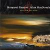

Celtic Lyrics Corner > Artists & Groups > Margaret Stewart > Fhuair Mi Pog
|  |
Fhuair Mi Pog
(1998) |
| Tracks : |
1.
Fhuair Mi Pog A Laimh An Righ (I Got A Kiss Of The King's Hand)
2. Bha Caileag As t-Earrach (There Was A Girl) 3. Cille Pheadair (Kilphedir) 4. Dol Dhan Taigh Bhuan Leat (Going To The Eternal Dwelling With You) 5. O Mhairi 'S Tu Mo Mhairi (Mary, You Are My Mary) 6. I Ho Ro 'S Na Hug Oro Eile 7. He Na Milibhig 8. Slainte Bhon t-Seann Duthaich (Good Health From The Old Country) 9. Ochoin A Righ, Gur Tinn An Galair An Gradh (Alas! Sore Is The Disease Of Love) 10. Cro Chinn t-Saile (The Cattle Fold Of Kintail)/A' Bhanais A Bha'n Ciostal Odhar (The Wedding In Coistal)/Siuthadaibh Bhalachaibh (Devil In The Kitchen) 11. Cumha Mhic An-toisich (Macintosh's Lament) 12. Ruidhlichean Pioba (Pipe Reels) 13. Uamh An Oir (Cave Of Gold)/Cumha An t-Seana Chlaidheimh (Lament For The Old Sword) 14. 'S Olc An Obair Do Theachdairean Cadal (Sleep Is Ill Work For Messengers) 15. Port Na bPúcaí (The Tune Of The Fairies) |